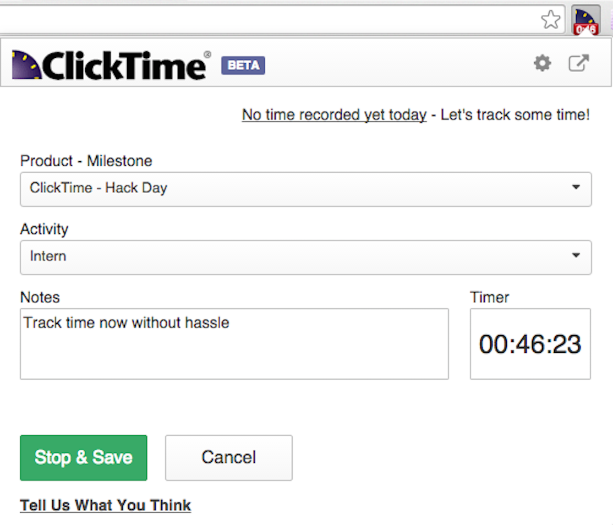
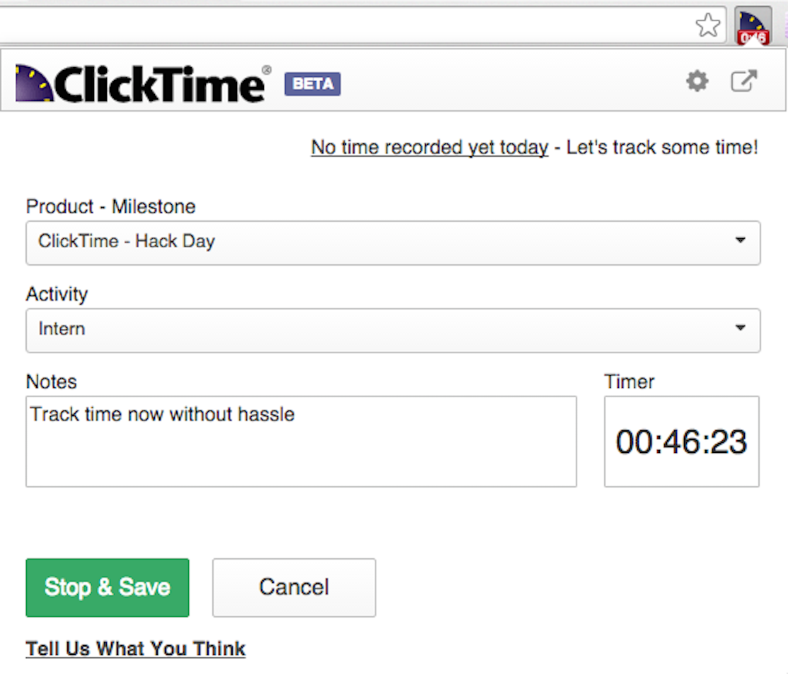
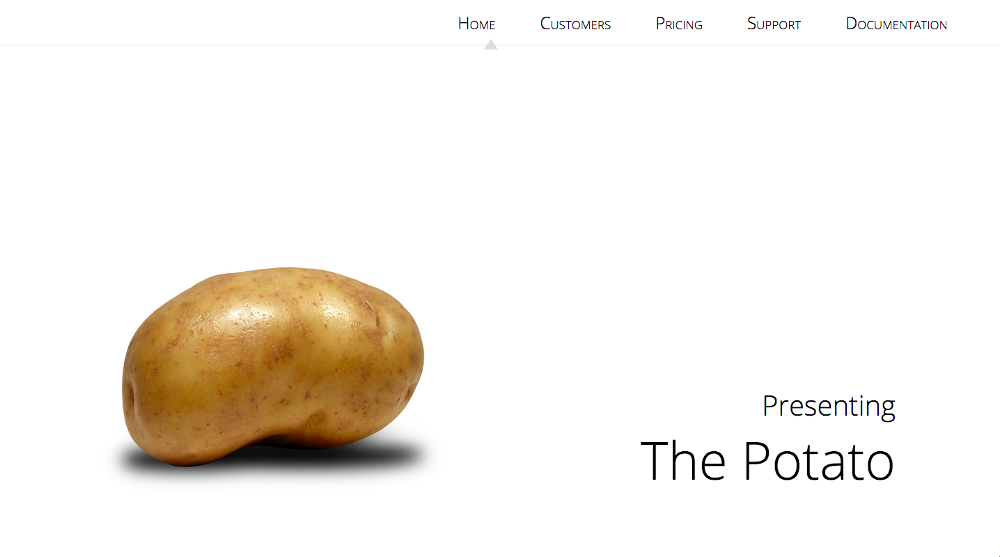

https://github.com/clicktime/ClickTimeExtension
Idea: I worked at ClickTime over the summer. Everyday, we had to log on and track time. But loading the whole website, with its hundreds of different modules and options that would be useful to managers but not to the average person trying to enter time for one day took too long and just didn’t make sense. Our intern team got together to ease the pain of time tracking by building a Chrome extension using the ClickTime API to circumvent the main app, making a miniature version of ClickTime with only 1 goal: to track time for today. In the end, we reduced time tracking to 1/3 of the original time.
Challenges or limitations: One of the features we wanted was a dynamic timer visible on the icon in the chrome extension tray. When you pressed start, a running stopwatch of how long you’ve been working for should show up. This caused a great deal of grief. We stored time data by putting it in Chrome storage, creating an Angular service to get and set it. But timer would stop running every time the chrome extension closed, falling out of sync with Chrome local storage, because the Angular service stops running once the extension main page is closed.
Another thing that caused a lot of headache was the user permissions for time entry methods. We retrieved the permission from the API, and then used the data to set the page view. But what if the administrator switched the time entry method? There needed to be a forced API call to refresh somewhere. But where? Too many calls, and you slow down the loading. Too little calls, you risk stale data. We had to balance performance with invalid time entries.
Lessons learned: You can register services in background scripts as well, so registering the service as a background script would work. But it had too many other dependencies, and it didn’t make sense to register 5 files for one function. So, against all rules of DRY, I repeated myself and copied and pasted the one function that I needed. Best solution? Maybe not. But best solution given the constraints of the situation? Definitely. Sometimes, the best solution involves violating a principle.
Also, callback functions are best handled with promises.
Links: Here is the version on GitHub. ClickTime really liked it, and they took it into their own developmental repositories for tweaking. The official version, authored by ClickTime, has a launch date in the Chrome store unknown to me.

![ https://github.com/clicktime/ClickTimeExtension Idea: I worked at ClickTime over the summer. Everyday, we had to log on and track time. But loading the whole website, with its hundreds of different modules and options that would be useful to managers but not to the average person trying to enter time for one day took too long and just didn’t make sense. Our intern team got together to ease the pain of time tracking by building a Chrome extension using the ClickTime API to circumvent the main app, making a miniature version of ClickTime with only 1 goal: to track time for today. In the end, we reduced time tracking to 1/3 of the original time. Challenges or limitations: One of the features we wanted was a dynamic timer visible on the icon in the chrome extension tray. When you pressed start, a running stopwatch of how long you’ve been working for should show up. This caused a great deal of grief. We stored time data by putting it in Chrome storage, creating an Angular service to get and set it. But timer would stop running every time the chrome extension closed, falling out of sync with Chrome local storage, because the Angular service stops running once the extension main page is closed. Another thing that caused a lot of headache was the user permissions for time entry methods. We retrieved the permission from the API, and then used the data to set the page view. But what if the administrator switched the time entry method? There needed to be a forced API call to refresh somewhere. But where? Too many calls, and you slow down the loading. Too little calls, you risk stale data. We had to balance performance with invalid time entries. Lessons learned: You can register services in background scripts as well, so registering the service as a background script would work. But it had too many other dependencies, and it didn’t make sense to register 5 files for one function. So, against all rules of DRY, I repeated myself and copied and pasted the one function that I needed. Best solution? Maybe not. But best solution given the constraints of the situation? Definitely. Sometimes, the best solution involves violating a principle. Also, callback functions are best handled with promises. Links: Here is the version on GitHub. ClickTime really liked it, and they took it into their own developmental repositories for tweaking. The official version, authored by ClickTime, has a launch date in the Chrome store unknown to me.](assets/img/projimg/clicktime.png){kind=link}
![http://snap.berkeley.edu/snapsource/snap.html Idea: New feature for Snap! that manipulates costume appearance Challenges or limitations: Jumping into and working with an existing project. Lessons learned: This was my first open source contribution, and as such, the first time I contributed instead of creating. It was hard to read and understand other people’s ideas, but this project was so wortwhile because of this. Software is much more about working with what already exists rather than creating something from scratch, so this was an important skill to learn. Links: http://snap.berkeley.edu/snapsource/snap.html](assets/img/projimg/snap.png){kind=link}
![ http://galacticmonkeys.github.io/The-Potato/ Idea: A parody of startup websites all espousing the same idea, with the same buzzwords. After the funding of the Yo app, it was hard to put a limit on what couldn’t be considered a startup. Can I sell you a potato? Challenges or limitations: This was also an exercise in learning jQuery. It progressed very smoothly. But as always, optimizing for different browsers and screen sizes is tedious, and that was something I didn’t bother to do. Lessons learned: jQuery is more and more so becoming a web standard. On modern websites, it’s hard to find any sort of DOM manipulation without jQuery. Links: http://galacticmonkeys.github.io/The-Potato/](assets/img/projimg/the-potato.png){kind=link}
![http://galacticmonkeys.github.io/which-class/ Idea: There are 3 introductory CS courses at Cal, and as such, it causes a great deal of confusion for students to figure out which course they should take. A bunch of students collaborated on a Google Doc to provide advice on which class to choose. I pointed out that no one would scroll through 9 pages of information presented in such a shoddy manner. So this is a website wrapper for all that information. Challenges or limitations: I utilized impress.js, which handles a prezi-like movement for a quiz to tell a student which class they should take. The formatting was all going to be the same for every question, so I decided to template it. But this provided difficulty because of some unique formatting and positioning issues on some particular questions. Lessons learned: This project was more frustrating than insightful. The styling is all handled with libraries. There wasn’t anything I discovered or was enlightening. The true lesson is that some projects are like that. Was it worth my time, even though I didn’t learn anything? I would say yes. I learned the in and outs of some libraries, if anything, and if it helped some people, then it’s worth it. Links: http://galacticmonkeys.github.io/which-class/](assets/img/projimg/which-class.png){kind=link}
![https://gist.github.com/galacticmonkeys/9b2b8147673148ae4102 Idea: Simulate the typing effect to trigger the typing indicator to annoy office workers. Challenges or limitations: Figuring out the events that triggered the typing notification. Lessons learned: I didn’t realize so much went into typing: mouseover, mousedown, click, mouseup, type. All of these events had to be triggered to kick the typing notification. Web technologies are incredible. That’s all. Links: https://gist.github.com/galacticmonkeys/9b2b8147673148ae4102](assets/img/projimg/slack.png){kind=link}
![https://gist.github.com/galacticmonkeys/2402f11afb5dbd227166 Idea: Speed up grading by automating folder traversal and file editing. Challenges or limitations: Bash isn’t too different from anything else. But figuring out how to use sed to properly do a very specific thing was hard. Lessons learned: The process of Googling: What is the problem I am running in to? In what context might someone else also be encountering the same problem? How is it possible that I am the only person in the world running into this problem? Finally! A relevant StackOverflow post! 0 answers??? Consult documentation. Links: https://gist.github.com/galacticmonkeys/2402f11afb5dbd227166](assets/img/projimg/bash.png){kind=link}